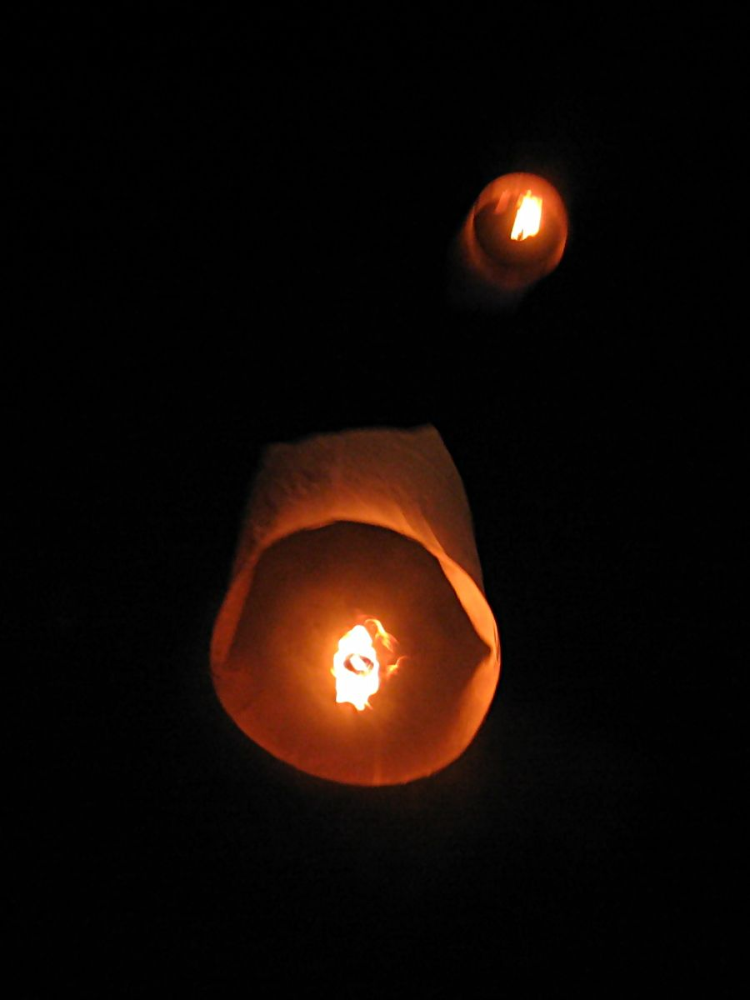
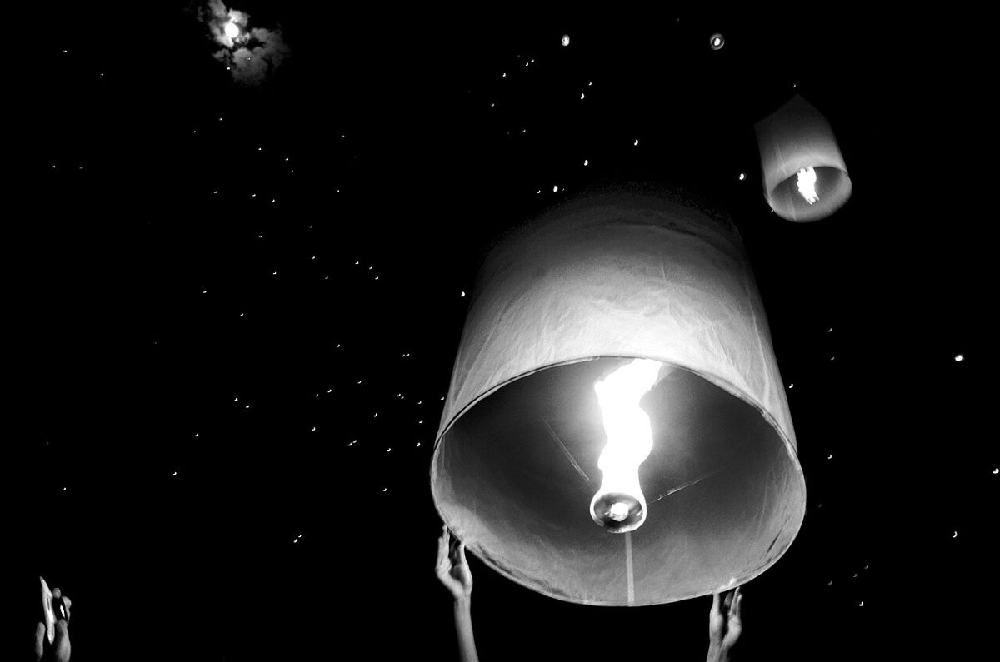
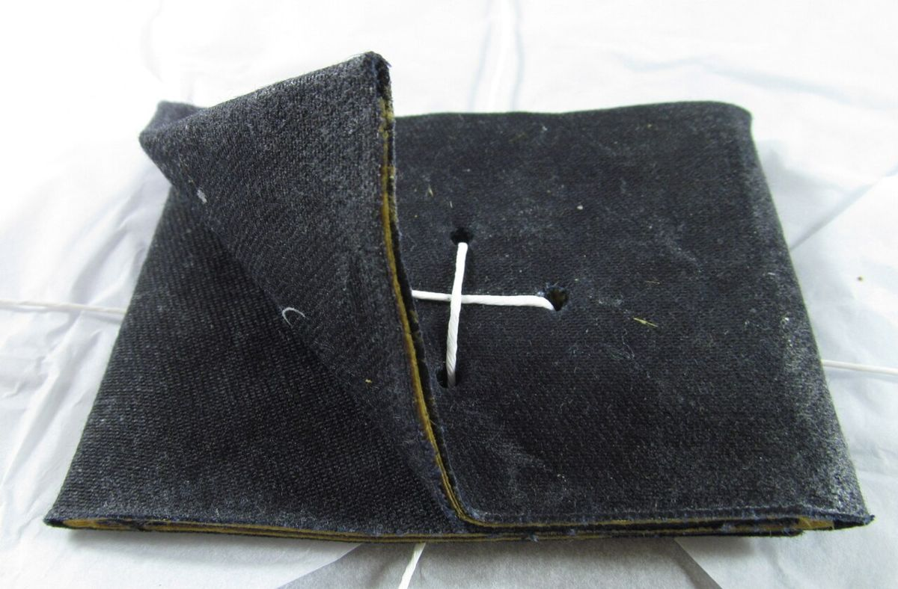
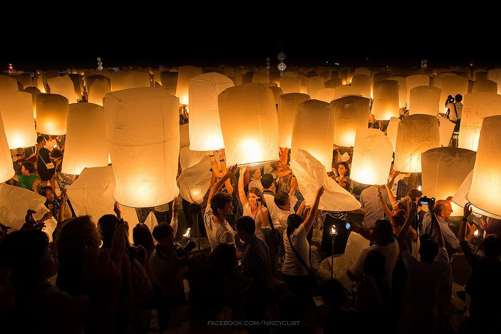
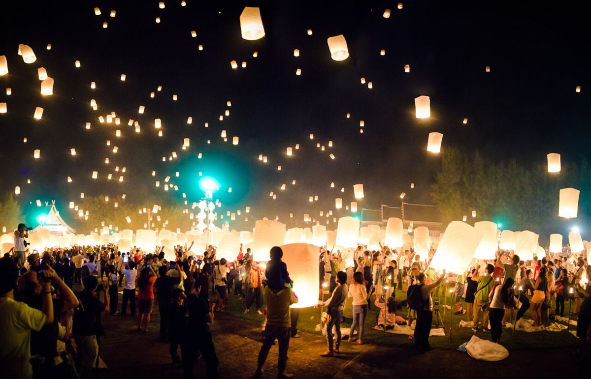
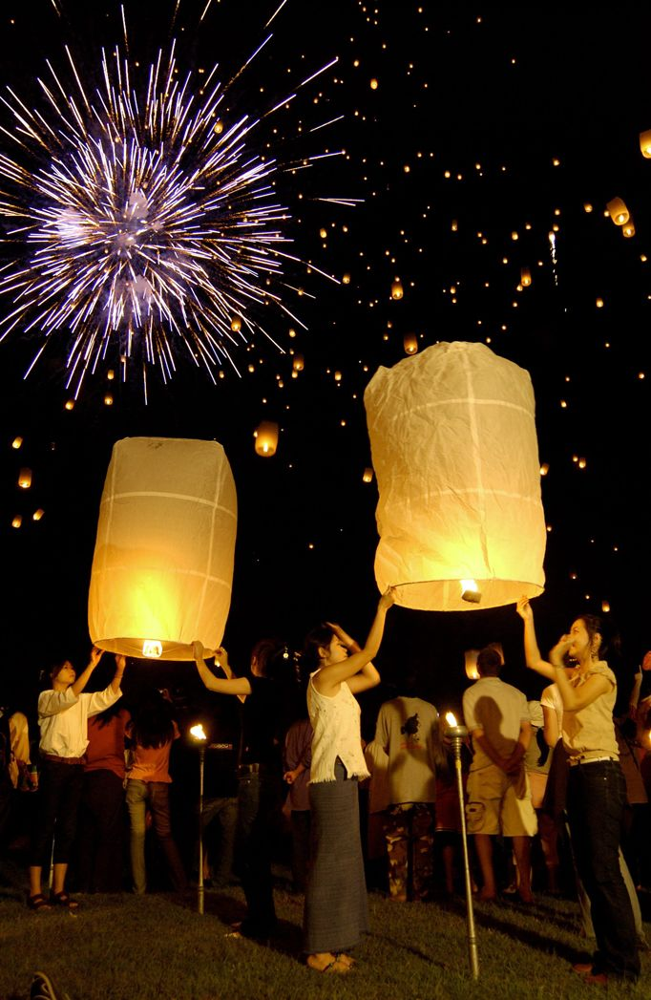
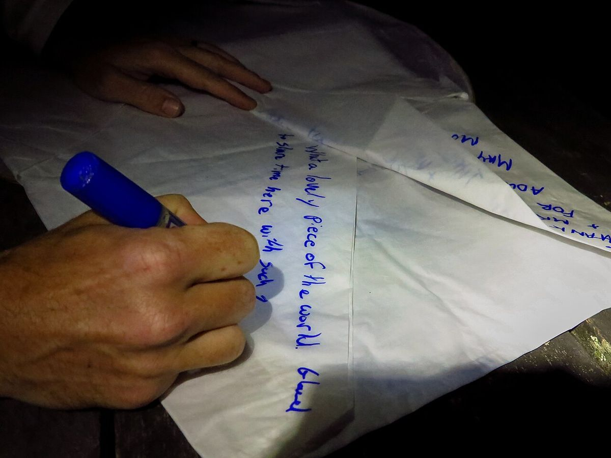
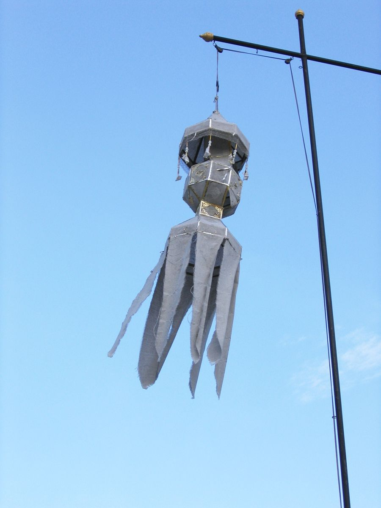

ยี่เป็ง · เชียงใหม่
โคมลอย วาดด้วยคณิต
กระดาษ โครงไม้ไผ่ เชื้อเพลิงหนึ่งก้อน กับไฟนิดเดียว ทำไมมันลอยขึ้น ขึ้นได้สูงแค่ไหน นานเท่าไร แล้วไปตกที่ไหน โคมทุกดวงในหน้านี้ลอยด้วยสูตรเดียวกัน
แตะท้องฟ้าเพื่อปล่อยโคม
ทำไมลอย ลอยสูงแค่ไหน ไปตกที่ไหน
motdang.net/sites/khom-loi
โคมลอยคืออะไร
กระดาษ ห่วงไม้ไผ่ และลูกไฟ
โคมลอยคือกระดาษทรงกระบอก ปิดด้านบน เปิดด้านล่าง ติดอยู่กับห่วงไม้ไผ่ มีลวดสองเส้นขึงไขว้กลางห่วง แขวนเชื้อเพลิงไว้ตรงกลาง คือกระดาษหรือผ้าชุบขี้ผึ้งหรือพาราฟิน ตำราล้านนาเรียกส่วนที่ไหม้ว่า ลูกไฟ เล่าว่าแต่ก่อนหล่อจากขี้ย้า ปัจจุบันนิยมใช้กระดาษชำระชุบขี้ผึ้งเทียน
ประกาศจังหวัดกำหนดขนาดไว้ กว้างไม่เกิน 90 ซม. สูงไม่เกิน 140 ซม. ปริมาตรข้างในไม่เกิน 1 ลูกบาศก์เมตร ทำจากวัสดุธรรมชาติ เชื้อเพลิงไม่เกิน 55 กรัม ไหม้ไม่เกิน 8 นาที ใหญ่กว่านี้นับเป็นอากาศยาน เชียงใหม่ใช้เกณฑ์เดียวกัน
ภาษาล้านนาเรียกว่า ว่าว ยี่เป็งมีสองแบบ ว่าวฮม อัดควันแล้วปล่อยตอนกลางวัน กับ ว่าวไฟ มีไฟติดไปด้วย ปล่อยตอนกลางคืน แบบกลางคืนคือที่คนส่วนใหญ่ตอนนี้เรียกว่าโคมลอย ส่วนประกาศของสนามบินเรียกแบบกลางวันว่า โคมควัน
ยี่เป็งคือวันเพ็ญเดือนยี่ของล้านนา ตรงกับวันเพ็ญเดือนสิบสองของภาคกลาง คือคืนลอยกระทง กรมประชาสัมพันธ์เขียนไว้ว่า การปล่อยโคมเป็นการบูชาพระเกศแก้วจุฬามณีบนสวรรค์ชั้นดาวดึงส์ และปล่อยความทุกข์และเคราะห์ร้ายให้ลอยไป
อากาศกลางคืนอากาศร้อนข้างใน
ทำไมลอย
อากาศร้อนคืออากาศที่บาง
อากาศคือเม็ดเล็ก ๆ ที่วิ่งชนกันไปมา พอร้อนขึ้นก็วิ่งแรงขึ้นและถอยห่างกัน ที่เท่าเดิมเลยมีอากาศน้อยลง โคมที่เต็มไปด้วยอากาศร้อนจึงเบากว่าอากาศเย็นตอนกลางคืนในที่เท่ากัน
โคมจะลอยขึ้นเมื่ออากาศกลางคืนที่มันเบียดออกไปหนักกว่าอากาศร้อนข้างใน บวกกระดาษ โครง และเชื้อเพลิง ส่วนที่เหลือคือแรงยก
แรงยก = V × (ρกลางคืน − ρข้างใน) ρ = p ÷ (R × T)
ร้อนเกินราว 230 °C กระดาษเริ่มไหม้เกรียม ในการทดลองของ TU Delft ยอดโคมดวงหนึ่งติดไฟหลังจุด 105 วินาที ทั้งที่เชื้อเพลิงยังไหม้อยู่
โคมที่วาดตรงนี้เป็นทรงกระบอกกระดาษ ปากกว้าง 62% ของความสูง ด้านบนกว้างกว่านิดหน่อย กระดาษ 22 กรัมต่อตารางเมตร โครง 12 กรัม เชื้อเพลิง 30 กรัม ค่า T ในสูตรเป็นเคลวิน คือ °C + 273 ค่า p คือ 96.5 กิโลปาสคาล ความดันอากาศที่ห้องแล็บฟิสิกส์ มหาวิทยาลัยเชียงใหม่วัดได้ R คือ 287 J/(kg·K) ของอากาศ ห้องแล็บนั้นทำให้โคมหนัก 28.7 กรัม ปริมาตร 0.159 ลบ.ม. ลอยด้วยเทียนทีไลท์ในปี 2565 สูตรเดียวกันบอกว่าต้องร้อนข้างใน 85.6 °C ที่อุณหภูมิห้อง 27.65 °C ทีมวิจัยคำนวณได้ 85.8 °C และวัดด้วยกล้องอินฟราเรดได้ 95.0 °C
หนึ่งเที่ยวบิน
ขึ้นตอนไฟติด ลงตอนอากาศเย็น
จุดเชื้อเพลิงแล้วจับไว้ อากาศข้างในร้อนขึ้นจนโคมดึงมือ แล้วค่อยปล่อย มันลอยขึ้นไปตลอดเวลาที่ไฟยังไหม้ พอเชื้อเพลิงหมด อากาศข้างในเย็นลงในไม่ถึงนาที แล้วโคมก็ตกลงมา
ความสูงอุณหภูมิข้างในช่วงไฟติด
ทุก ๆ เสี้ยววินาที หน้านี้คิดสี่อย่าง เชื้อเพลิงไหม้ไปเท่าไร ความร้อนอยู่ข้างในเท่าไร อากาศดันขึ้นแรงแค่ไหน และโคมเคลื่อนเร็วแค่ไหนเมื่อมีแรงต้านของอากาศ เชื้อเพลิงสองเท่า ลอยได้นานราวสองเท่า โคมเล็กที่ใช้ไฟเท่ากัน ข้างในจะร้อนกว่า
เที่ยวบินนี้เป็นแบบจำลองของหน้านี้เอง ทำแบบเดียวกับแบบจำลองโคมลอยของ TU Delft ปี 2560 แรงยกจากความหนาแน่นอากาศที่ต่างกัน อากาศบางลงตามความสูง เชื้อเพลิงไหม้ในอัตราคงที่ แล้วตกลงด้วยความเร็วที่แรงต้านอากาศเท่ากับน้ำหนัก อัตราไหม้มาจากเวลาที่ TU Delft จับได้ (100–330 วินาที) และเกณฑ์ตามกฎหมาย 55 กรัม 8 นาที ส่วนความร้อนที่เก็บไว้ข้างในและที่หายไปทางกระดาษเป็นค่าที่ตั้งเอง เทียบดู ผู้ตรวจของเนเธอร์แลนด์ดูโคม 10 ดวงในปี 2552 ลอยอยู่ 2–5 นาที สูง 50–300 เมตร ตกห่างออกไป 633–1,900 เมตร
ไปตกที่ไหน
ลมเป็นคนเลือก
โคมลอยไม่มีพวงมาลัย ลมไปทางไหนมันก็ไปทางนั้น และลมข้างบนพัดแรงกว่าลมริมน้ำ นี่คือโคมสี่สิบดวงจากที่เดียวกัน แต่ละดวงต่างกันนิดหน่อย งานปล่อยโคมใหญ่ที่ขายบัตรอยู่แถวแม่โจ้ สันทราย
ตกบนพื้นตกในน้ำตกในสนามบิน
ช่วงลอยกระทง ห้ามปล่อยโคมทั้งอำเภอเมืองเชียงใหม่และหางดง และบางตำบลในสารภี สันทราย แม่ริม สันป่าตอง รวม 39 ตำบลใน 6 อำเภอ ที่ใส่ประตูท่าแพไว้ในแผนที่ก็เพื่อให้เห็นว่าทำไม รันเวย์อยู่ห่างไป 3.3 กม. เป็นเส้นตรง แค่ลมเบา ๆ จากทิศตะวันออก กับโคมที่ลอยอยู่ไม่กี่นาที ก็ไปถึง
สนามบินนับโคมที่ตกในรั้วสนามบินไว้ ปี 2556 มี 1,425 ดวง ปี 2557 มี 142 ดวง ปี 2558 มี 59 ดวง
แผนที่: OpenStreetMap contributors (ODbL) ลมแรงขึ้นตามความสูงแบบ (ความสูง ÷ 10 ม.)0.25 ซึ่งเป็นรูปแบบปกติของคืนที่ลมสงบ โคมแต่ละดวงมีขนาด เชื้อเพลิง และลมกระโชกของตัวเอง ทิศลมเบี่ยงได้ถึง 20° จากที่ตั้งไว้
โคมพันดวง
บนฟ้ามีกี่ดวงพร้อมกัน
ถ้าปล่อยโคมทีละนิดอย่างสม่ำเสมอ ท้องฟ้าจะค่อย ๆ เต็ม จนดวงแรก ๆ เริ่มตกลงมา จากนั้นจำนวนบนฟ้าจะคงที่ คือ จำนวนที่ปล่อยต่อนาที คูณ จำนวนนาทีที่แต่ละดวงลอยอยู่
ร้านค้าใช้สูตรเดียวกัน เรียกว่ากฎของลิตเติล คนในร้าน = คนเข้าร้านต่อนาที × นาทีที่แต่ละคนอยู่ในร้าน
บนฟ้าพร้อมกัน = λ × W
ค่า W มาจากแบบจำลองหนึ่งเที่ยวบินข้างบน โคมสูง 1 เมตร เชื้อเพลิง 30 กรัม
ยี่เป็ง 2569
สองคืน มีเวลากำหนด
พระจันทร์เต็มดวงวันอังคารที่ 24 พฤศจิกายน 2569 เวลา 21:53 น. ประกาศของสำนักงานการบินพลเรือนแห่งประเทศไทยสำหรับเชียงใหม่และลำพูน ออกเมื่อ 23 กรกฎาคม 2569 กำหนดเวลาปล่อยโคมไว้ดังนี้
ในช่วงเวลานี้สนามบินเชียงใหม่งดบิน ปี 2568 ยกเลิก 65 เที่ยว เลื่อนเวลา 96 เที่ยว ในสองคืน ปี 2566 ยกเลิก 101 เที่ยว เลื่อน 59 เที่ยว
จะปล่อยโคมต้องขออนุญาตนายอำเภอล่วงหน้าอย่างน้อย 30 วัน ปี 2567 เชียงใหม่อนุญาตราว 62,000 ดวง ปี 2568 มีคนขอ 92,313 ดวง ปล่อยใกล้สนามบินผิดพระราชบัญญัติการเดินอากาศ โทษจำคุกถึง 5 ปี ปรับถึง 200,000 บาท
ถึงวันที่ 3 ตุลาคม 2569 จังหวัดเชียงใหม่ยังไม่ออกประกาศของปีนี้ ปีก่อน ๆ ออกในเดือนตุลาคมหรือพฤศจิกายน
ภาพ
โคมลอยกับคนปล่อยโคม







.jpg){kind=link}

.jpg){kind=link}




_(31987951110).jpg){kind=link}


คำศัพท์
โคมที่ลอยขึ้นฟ้า แบบกลางคืนที่มีไฟ
วันเพ็ญเดือนยี่ของล้านนา
คำล้านนา โคมมีไฟ ปล่อยกลางคืน
คำล้านนา โคมอัดควัน ปล่อยกลางวัน
คำที่ใช้ตอนนี้แทนว่าวฮม
เชื้อเพลิงที่แขวนไว้กลางห่วง
คำที่ประกาศราชการใช้
ปล่อยโคมขึ้นฟ้า
โคมที่แขวนไว้กับเสา ไม่ลอย
โคมที่หมุนด้วยความร้อนจากไฟของมันเอง
ถ้วยดินเผาจุดไฟในวันยี่เป็ง
พระเกศาธาตุบนสวรรค์ชั้นดาวดึงส์
ที่มา
ข้อมูลในหน้านี้มาจากที่เหล่านี้
- Royal Gazette, Samut Sakhon province notice on lanterns (size and fuel limits), 14 Nov 2016
- MGR Online, Chiang Mai lantern limits and banned districts, 18 Oct 2023
- Civil Aviation Authority of Thailand, AIP SUP A 27/26, Chiang Mai lantern hours, 24–25 Nov 2026
- US Naval Observatory, moon phases 2026
- Wattanakasiwich, Kongkhumbod & Pussadee, Heating up a lantern with a tealight candle, Revista Mexicana de Física E 19, 2022 (Chiang Mai University)
- Schuurman & Gransden, Sky Lantern Safety Flight Profile for Risk Assessment, AIAA 2017-3289 (TU Delft)
- TU Delft Aerospace Engineering, Fiery romance: a risk model for sky lanterns
- Payap University Library, ประเพณียี่เป็ง (Lanna custom sheet)
- กรมประชาสัมพันธ์ (Government Public Relations Department), ยี่เป็ง, 13 Jun 2026
- ศิลปวัฒนธรรม, why Lanna's second month is central Thailand's twelfth, 11 Nov 2019
- Airports of Thailand, press release 89/2567 on lanterns and the Air Navigation Act, 11 Nov 2024
- Thai PBS, Chiang Mai approves 62,000 lanterns, 12 Nov 2024
- Prachachat Turakij, Yi Peng 2025 figures, 23 Nov 2025
- Thansettakij, Chiang Mai airport flight changes for Yi Peng 2025, 1 Nov 2025
- The Nation via Asia News Network, 160 Chiang Mai flights cancelled or rescheduled, 24 Nov 2023
- Matichon, lanterns collected inside Chiang Mai airport 2013–2015, 9 Nov 2016
- OpenStreetMap contributors (ODbL), map data via Protomaps